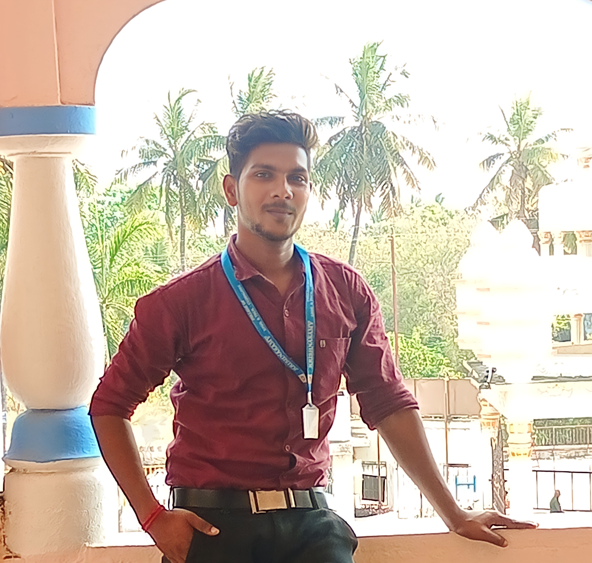

Ramkumar
System Administrator
IT Support & Networking Professional
Motivated IT professional with a strong foundation in networking concepts, CCNA, protocols, security, system administration and end-user support. Experienced in troubleshooting hardware, software, network and production-line IT issues.

Get To Know Me
I am a System Administrator and IT Support professional with a B.E. in Computer Science and Engineering. My current role involves supporting 200+ end users, configuring devices and email, managing printers and network assets, and troubleshooting hardware, software and network issues.
I have a strong interest in networking, Windows Server administration, infrastructure troubleshooting and reliable production IT support.
Technical Skills
Networking, server administration, desktop support and infrastructure troubleshooting.
Network Troubleshooting
LAN, IP addressing, subnetting, connectivity and network issue diagnosis
Windows Server
ADDS, DNS, IIS, DHCP and server administration fundamentals
Printer Configuration
Network printer setup, configuration, driver and production printer support
Hardware Troubleshooting
Hardware diagnosis, maintenance, peripherals and system issue resolution
Remote Support
Remote Desktop, Remote Assistance and end-user technical support
Ticketing
Issue tracking, user support and structured incident resolution
Networking & Security
CCNA concepts, protocols, access control and network security fundamentals
End-User IT Support
Software installation, Outlook configuration and support for 200+ users